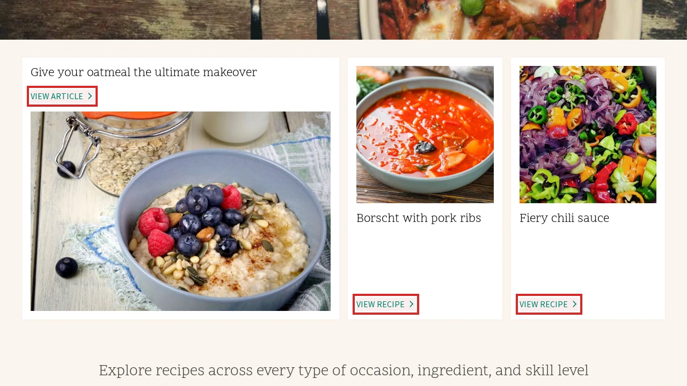
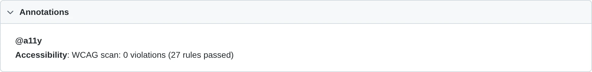
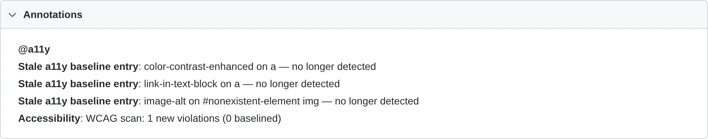
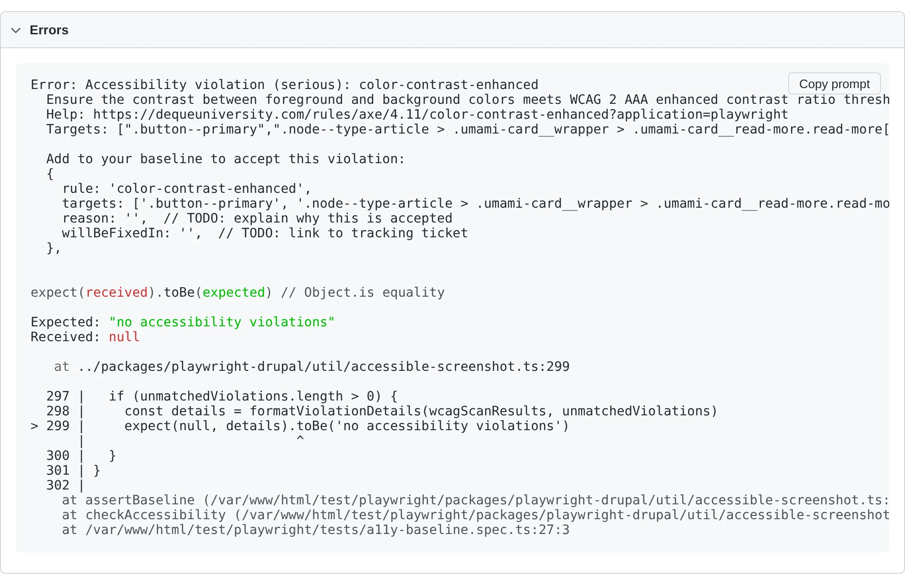
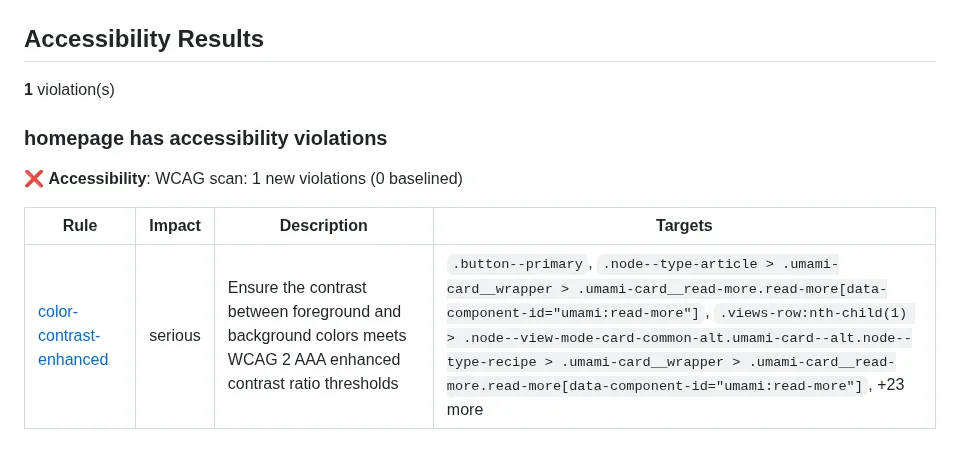

Accessibility Tests
Two top-level helpers drive accessibility assertions: checkAccessibility() runs axe-core scans against the current page; takeAccessibleScreenshot() takes a visual-diff screenshot first and then runs the same scans. Both attach axe results, a highlighted screenshot of violating elements, and annotations to the test report, and both dispatch to baseline mode by default. The a11y fixture wraps them so tests can call a11y.check() / a11y.screenshot() without threading testInfo through.
import { test, checkAccessibility, takeAccessibleScreenshot } from '@packages/playwright-drupal';
test('homepage has no a11y violations', async ({ page }, testInfo) => {
await page.goto('/');
await checkAccessibility(page, testInfo);
});
test('homepage screenshot + a11y', async ({ page }, testInfo) => {
await page.goto('/');
await takeAccessibleScreenshot(page, testInfo);
});
test('homepage via the fixture', async ({ page, a11y }) => {
await page.goto('/');
await a11y.check();
});
Accessibility baselines
Each WCAG and best-practice scan is asserted against an on-disk JSON baseline file colocated with snapshots. The file uses an object schema with a human-readable note plus a violations array of accepted entries:
{
"note": "TODO: fill in reason and willBeFixedIn for each entry before committing.",
"violations": [
{
"rule": "color-contrast",
"targets": ["#footer .legal"],
"reason": "TODO",
"willBeFixedIn": "TODO"
}
]
}
When you run a new test for the first time locally, the baseline file is auto-seeded next to where its snapshot would have been (e.g. my-test-1.a11y-baseline.json for WCAG, my-test-1.a11y-baseline-best-practice.json for best-practice). The first run passes; subsequent runs match against the file. Replace the TODO placeholders with a real reason and tracking ticket before committing.
When a test runs on CI (process.env.CI set) and would auto-seed a baseline file, the file is written and attached to the test report, but the test fails with a directive to download/commit it. This mirrors Playwright's default behaviour for missing visual snapshots and prevents new accessibility violations from silently slipping through CI.
Tests that pass baseline: to checkAccessibility() (or a11y.check()) using defineAccessibilityBaseline() take precedence over the on-disk JSON file — use this when you need to share a baseline across multiple tests or compute it from test data.
Snapshot mode (deprecated)
Earlier versions of this package pinned violations via Playwright's toMatchSnapshot() against a .txt snapshot in the test's -snapshots/ directory. Tests with a committed .txt snapshot continue to assert against it for backwards compatibility, but snapshot mode is deprecated — new tests should use baselines, and existing tests should migrate. To migrate a test, delete its .txt snapshot and let the next local run seed a .a11y-baseline.json in its place.
Test report integration
Accessibility results surface in the Playwright HTML report through tags, annotations, and attachments:
@a11ytag — every test that runs an accessibility check is tagged so runs can be filtered to just a11y tests.- Scan summary annotations — each scan adds an
Accessibilityannotation summarising counts (e.g.WCAG scan: 0 new violations (2 baselined)). - Baselined violation annotations — each suppressed violation appears as a
Baselined a11y violationannotation with itsreasonandwillBeFixedInlink, so reviewers can see what is being waived and where the fix is tracked. - Stale baseline annotations — baseline entries that no longer match any detected violation appear as
Stale a11y baseline entryannotations so they can be cleaned up. - Scan result attachments — full axe-core JSON is attached as
a11y-best-practice-scan-resultsanda11y-wcag-scan-resultsfor detailed inspection. - Violation screenshot — when WCAG violations are detected, a full-page screenshot is attached with every violating element outlined in red. Disable via
screenshotViolations: falsein AccessibilityOptions.

A passing test shows the @a11y tag and a scan summary:

When a baseline is in use, the report also lists baselined violations and any stale entries:

Unmatched violations fail the test with a detailed error — rule, impact, help URL, affected targets, and a copy-pasteable baseline entry you can drop straight into .a11y-baseline.json:

Accessibility functions
checkAccessibility()
checkAccessibility(page: Page, testInfo: TestInfo, options?: AccessibilityOptions): Promise<void>
| Parameter | Default | Description |
|---|---|---|
page |
(required) | The Playwright page object. |
testInfo |
(required) | The Playwright TestInfo for the current test — required for baseline-file derivation, attachments, and annotations. |
options |
{} |
See AccessibilityOptions. |
Runs a best-practice axe scan (unless bestPracticeMode is 'off') followed by a WCAG scan. Attaches JSON results for each scan, a highlighted screenshot of any WCAG violations, and an @a11y annotation to the test. Each scan dispatches independently to the right assertion mode: explicit in-code baseline → baseline mode; committed .txt snapshot on disk → snapshot mode; otherwise on-disk .a11y-baseline.json (seeded on first run).
takeAccessibleScreenshot()
takeAccessibleScreenshot(page: Page, testInfo: TestInfo, options?: ScreenshotOptions, scrollLocator?: Locator, locator?: Locator | Page): Promise<void>
| Parameter | Default | Description |
|---|---|---|
page |
(required) | The Playwright page object. |
testInfo |
(required) | The Playwright TestInfo for the current test. |
options |
{} |
Playwright screenshot options plus an accessibility field — see ScreenshotOptions. |
scrollLocator |
undefined |
Optional locator to scroll into view before the screenshot. |
locator |
page |
Optional element to screenshot. Axe still scans the whole page. |
Waits for all images and iframes to load, applies project-specific thresholds for Firefox/Safari's non-deterministic image rendering, then calls Playwright's toHaveScreenshot() (soft) and finally invokes checkAccessibility with options.accessibility. The timeout is clamped to at least 10 seconds so slow admin forms have time to stabilise.
a11y fixture
The a11y fixture exposes the two helpers above via the test context so you don't have to pass testInfo explicitly.
a11y.check(options?: AccessibilityOptions): Promise<void>
Shorthand for checkAccessibility(page, testInfo, options).
a11y.screenshot(options?: ScreenshotOptions, scrollLocator?: Locator, locator?: Locator | Page): Promise<void>
Shorthand for takeAccessibleScreenshot(page, testInfo, options, scrollLocator, locator).
import { test } from '@packages/playwright-drupal';
test('uses the a11y fixture', async ({ page, a11y }) => {
await page.goto('/about');
await a11y.screenshot({ fullPage: true });
});
AccessibilityOptions
| Field | Default | Description |
|---|---|---|
wcagTags |
['wcag2a', 'wcag2aa', 'wcag21a', 'wcag21aa'] |
Axe tags for the WCAG scan. |
exclude |
[] |
Additional CSS selectors to exclude from both scans. |
bestPracticeMode |
'soft' |
'soft' uses expect.soft() so the WCAG scan still runs on failure; 'hard' is preserved as a marker but does not change soft/hard today; 'off' skips the best-practice scan entirely. |
rules |
undefined |
Axe rule overrides, e.g. { 'color-contrast': { enabled: false } }. |
baseline |
undefined |
In-code baseline allowlist. When set, matching violations are suppressed and the on-disk JSON file is bypassed. Pair with defineAccessibilityBaseline(). |
disableDefaultExclusions |
false |
When true, removes the hard-coded Drupal exclusions (skip-link and duplicate landmarks on the best-practice scan; the [data-drupal-media-preview="ready"] element on the WCAG scan). |
screenshotViolations |
true |
When true, attaches a full-page screenshot with violating elements outlined in red. |
ScreenshotOptions
A superset of Playwright's toHaveScreenshot() options (animations, caret, fullPage, mask, maskColor, maxDiffPixelRatio, maxDiffPixels, omitBackground, scale, threshold, timeout) plus:
| Field | Default | Description |
|---|---|---|
accessibility |
undefined |
AccessibilityOptions passed through to checkAccessibility. |
In-code baselines
Use defineAccessibilityBaseline() when a baseline needs to be shared across multiple tests or computed from test data. An in-code baseline takes precedence over the on-disk .a11y-baseline.json file.
import { test, defineAccessibilityBaseline } from '@packages/playwright-drupal';
const sharedBaseline = defineAccessibilityBaseline([
{
rule: 'color-contrast',
targets: ['#footer .legal'],
reason: 'Brand-mandated gray; waiting on design refresh.',
willBeFixedIn: 'https://example.com/issues/123',
},
]);
test('about page', async ({ page, a11y }) => {
await page.goto('/about');
await a11y.check({ baseline: sharedBaseline });
});
defineAccessibilityBaseline()
defineAccessibilityBaseline(entries: AccessibilityBaseline): AccessibilityBaseline
| Parameter | Default | Description |
|---|---|---|
entries |
(required) | Array of AccessibilityBaselineEntry — accepted violations. |
Pass-through identity function that exists for type inference. Returns the input unchanged; its only purpose is to make TypeScript infer the array as AccessibilityBaseline so mis-typed entries are caught at compile time.
AccessibilityBaselineEntry
| Field | Description |
|---|---|
rule |
Axe rule ID (e.g. 'color-contrast'). |
targets |
CSS selectors for the elements with this violation. A violation is matched when its rule is identical and at least one normalised target selector overlaps. |
reason |
Why this violation is accepted. |
willBeFixedIn |
Link to a tracking ticket. |
Type alias: AccessibilityBaseline = AccessibilityBaselineEntry[]
Sharing a baseline with visual diffs
The visual-diff config passed to defineVisualDiffConfig() accepts an a11yBaseline so every generated test inherits the same in-code baseline without having to thread it through each test case:
import { defineVisualDiffConfig } from '@packages/playwright-drupal';
import { baseline } from '~/a11y-baseline';
export const config = defineVisualDiffConfig({
name: 'Umami Visual Diffs',
a11yBaseline: baseline,
groups: [
{
name: 'Landing Pages',
testCases: [
{ name: 'Home Page', path: '/' },
],
},
],
});
GitHub Accessibility Annotations
When running accessibility tests in CI, you can surface violations directly in GitHub workflow summaries and inline file annotations using the included composite action or CLI tool.

Prerequisites
The JSON reporter must be enabled for the annotation tools to parse test results. This is included automatically when using definePlaywrightDrupalConfig() — no extra configuration needed.
Using the Reusable Action (Recommended)
Add the following to your GitHub Actions workflow:
- name: Run Playwright tests
run: ddev exec npx playwright test
- name: Accessibility annotations
if: always()
uses: Lullabot/playwright-drupal/.github/actions/a11y-annotations@main
The if: always() ensures the annotations step runs even when the test step fails, so violations appear in the job summary regardless of overall job status.
This step will:
1. Write an accessibility summary to the workflow job summary
2. Create inline ::error / ::warning annotations on test files
Action Inputs
| Input | Default | Description |
|---|---|---|
report-path |
test-results/results.json |
Path to the Playwright JSON report |
mode |
all |
Output mode: all, summary, or annotations |
Using the CLI Directly
For more control, use the playwright-drupal-a11y-summary CLI:
- name: Accessibility summary
if: always()
run: ddev exec npx playwright-drupal-a11y-summary --mode=summary
- name: Accessibility annotations
if: always()
run: ddev exec npx playwright-drupal-a11y-summary --mode=annotations
CLI Options
| Option | Default | Description |
|---|---|---|
--mode=<mode> |
summary |
Output mode: summary or annotations |
--report-path=<path> |
test-results/results.json |
Path to the Playwright JSON report |